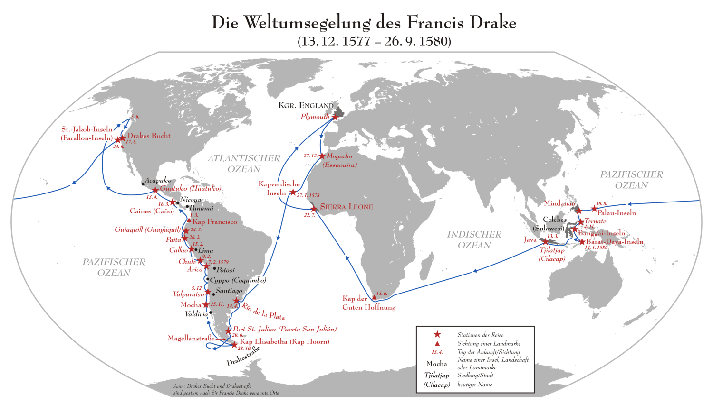

返回主页
活着完成环球航行

Drake Weltumsegelung
印度尼西亚的Sorong（四王岛）
不管去哪里旅行，活着最重要！！！
Fear is not real.It is a product of thoughts you create.Do not misunderstand me.Danger is very real.But fear is a choice.
潜水中碰到的可怕生物
不相配等于不安全
莫斯电码中三短代表S，三长代表O， 所以紧急求救信号就被简称为SOS
在莫尔斯电码中，“SOS”是“・・・ ― ― ― ・・・”。它简短、准确、连续而有节奏，易于拍发和阅读，也很易懂。
SOS for the international Morse code signal (・ ・ ・ ― ― ― ・ ・ ・)
问题是怎么敲出三短三长来啊实际应用的时候，还有说是可以用灯光闪烁来表示，那要如何闪呢 ？
敲击声音是用间隔的长短来表示声音的长短
如敲（停3秒）敲（停3秒）敲（停3秒）表示三长
敲（停1秒）敲（停1秒）敲（停1秒）表示三短
用灯光则是以亮的时间来表示声音的长短
如亮－－－灭－－－亮－－－灭－－－亮－－－灭－－－表示三长，
亮－灭－亮－灭－亮－灭－表示三短
一般长是短的三倍左右，但具体的间隔时间没规定，只要在节奏上有明显的区别即可。
潜水-船宿(liveboard diving)攻略
version:1.0; jobnet@188.com © retter2012.com